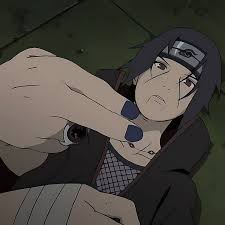
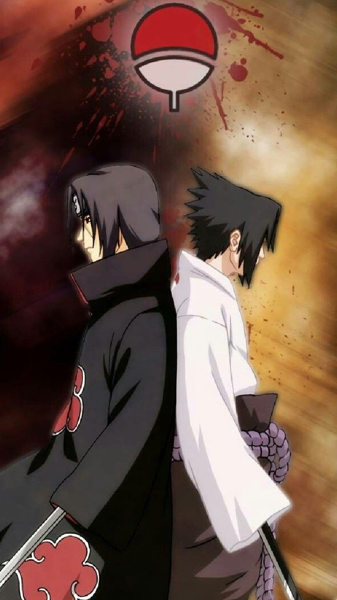

CLAN UCHIHA
SASUKE E ITACHI
ALTRI
Sasuke Uchiha
Sasuke Uchiha è un ninja del Villaggio della Foglia e unico sopravvissuto del Clan Uchiha dopo il massacro perpetrato dal fratello Itachi Uchiha. Dopo la promozione a Genin, viene assegnato al Team Kakashi assieme a Sakura Haruno e Naruto Uzumaki, suo rivale e migliore amico.
Itachi Uchiha

Itachi Uchiha era un un prodigio all'interno del Clan Uchiha del Villaggio della Foglia, in seguito diventato un ninja traditore. Da bambino, Itachi rimase coinvolto nella Terza Grande Guerra dei Ninja e da allora egli odia con tutto sè stesso ogni genere di conflitto armato.
Fratelli
